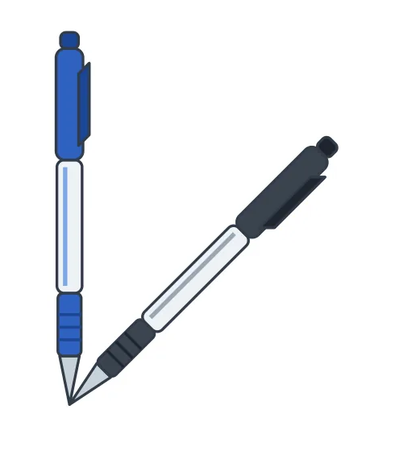

ציור של שני עטים — סימון ההיגדים הנכונים
חוברת זוויות לכיתה ז — דפי עבודה
3
לפניכם ציור של שני עטים.
סמנו את ההיגדים הנכונים לפי הציור.

הזווית בין העטים מהווה מחצית מזווית ישרה.
הזווית בין העטים קטנה מ-45 מעלות.
הזווית בין העטים היא זווית חדה.
אם נפתח את הזווית ב-45 מעלות נוספים, תתקבל זווית קהה.